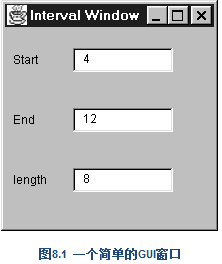

如果你想访问superclass中的一个值域，却又想在subclass中将「对这个变量的访问」改为一个计算后的值，这就是最该使用Self Encapsulate Field的时候。「值域自我封装」只是第一步。完成自我封装之后，你可以在subclass中根据自己的需要随意覆写取值/设值函数（getting and setting methods ）。
class IntRange {
boolean includes (int arg) {
return arg >= getLow() && arg <= getHigh();
}
void grow(int factor) {
setHigh (getHigh() * factor);
}
private int _low, _high;
int getLow() {
return _low;
}
int getHigh() {
return _high;
}
void setLow(int arg) {
_low = arg;
}
void setHigh(int arg) {
_high = arg;
}重构后的代码：
IntRange (int low, int high) {
initialize (low, high);
}
private void initialize (int low, int high) {
_low = low;
_high = high;
}
//一旦你拥有一个subclass，上述所有动作的价值就体现出来了。如下所示：
class CappedRange extends IntRange {
CappedRange (int low, int high, int cap) {
super (low, high);
_cap = cap;
}
private int _cap;
int getCap() {
return _cap;
}
int getHigh() {
return Math.min(super.getHigh(), getCap());
}
}
class Order...
public Order (String customer) {
_customer = customer;
}
public String getCustomer() {
return _customer;
}
public void setCustomer(String arg) {
_customer = arg;
}
private String _customer;
private static int numberOfOrdersFor(Collection orders, String customer) {
int result = 0;
Iterator iter = orders.iterator();
while (iter.hasNext()) {
Order each = (Order) iter.next();
if (each.getCustomerName().equals(customer)) result++;
}
return result;
}
重构后的代码：新建Customer类
class Customer {
public Customer (String name) {
_name = name;
}
public String getName() {
return _name;
}
private final String _name;
}
class Order...
public Order (String customerName) {
_customer = new Customer(customerName);
}
public String getCustomerName() {
return _customer.getName();
}
private Customer _customer;
public void setCustomer(String customerName) {
_customer = new Customer(customerName);
}
class Customer {
public Customer (String name) {
_name = name;
}
public String getName() {
return _name;
}
private final String _name;
}
class Order...
public Order (String customerName) {
_customer = new Customer(customerName);
}
public String getCustomerName() {
return _customer.getName();
}
private Customer _customer;
public void setCustomer(String customerName) {
_customer = new Customer(customerName);
}
private static int numberOfOrdersFor(Collection orders, String customer) {
int result = 0;
Iterator iter = orders.iterator();
while (iter.hasNext()) {
Order each = (Order) iter.next();
if (each.getCustomerName().equals(customer)) result++;
}
return result;
}
重构后的代码：引入factory method
class Order {
public Order (String customer) {
_customer = Customer.create(customer);
}
class Customer {
private static Dictionary _instances = new Hashtable();
//在应用程序的启动代码（start-up code）中，
//我先把需要使用的Customer对象加载妥当。
//这些对象可能来自数据库，也可能来自文件
static void loadCustomers() {
new Customer ("Lemon Car Hire").store();
new Customer ("Associated Coffee Machines").store();
new Customer ("Bilston Gasworks").store();
}
private void store() {
_instances.put(this.getName(), this);
}
public static Customer getNamed (String name) {
return (Customer) _instances.get(name);
}
private Customer (String name) {
_name = name;
}
value object有一个非常重要的特性：它们应该是不可变的（immutable）。无论何时只要你调用同一对象的同一个查询函数，你都应该得到同样结果。如果保证了这一 点，就可以放心地以多个对象表示相同事物（same thing）。如果value object是可变的（mutable），你就必须确保你对某一对象的修改会自动更新其他「代表相同事物」的其他对象。这太痛苦了，与其如此还不如把它变成reference object。
这里有必要澄清一下「不可变（immutable）」的意思。如果你以Money class表示「钱」的概念，其中有「币种」和「金额」两条信息，那么Money对象通常是一个不可变的value object。这并非意味你的薪资不能改变，而是意味：如果要改变你的薪资，你需要使用另一个崭新的Money对象来取代现有的Money对象，而不是在现有的Money对象上修改。你和Money对象之间的关系可以改变，但Money对象自身不能 改变。
class Currency...
private String _code;
public String getCode() {
return _code;
}
private Currency (String code) {
_code = code;
}
Currency usd = Currency.get("USD");
new Currency("USD").equals(new Currency("USD")) // returns false
重构后的代码：Currency对象是不可变的，所以下一步就是为它定义equals()：
public boolean equals(Object arg) {
if (! (arg instanceof Currency)) return false;
Currency other = (Currency) arg;
return (_code.equals(other._code));
}
public int hashCode() {
return _code.hashCode();
}
new Currency("USD").equals(new Currency("USD")) // now returns true
String[] row = new String[3];
row [0] = "Liverpool";
row [1] = "15";
String name = row[0];
int wins = Integer.parseInt(row[1]);
重构后的代码：
数组（array）是一种常见的用以组织数据的结构体。不过，它们应该只用于「以某种顺序容纳一组相似对象」。有时候你会发现，一个数组容纳了数种不同对象，这会给array用户带来麻烦，因为他们很难记住像「数组的第一个元素是人名」这样的约定。对象就不同了，你可以运用值域名称和函数名称来传达这样的信息，因此你无需死记它，也无需倚赖注释。而且如果使用对象，你还可以将信息封装起来，并使用Move Method 为它加上相关行为。
class Performance {}
public String[] _data = new String[3];
Performance row = new Performance();
row._data [0] = "Liverpool";
row._data [1] = "15";
String name = row._data[0];
int wins = Integer.parseInt(row._data[1]);
class Performance...
public String getName() {
return _data[0];
}
public void setName(String arg) {
_data[0] = arg;
}
public int getWins() {
return Integer.parseInt(_data[1]);
}
public void setWins(String arg) {
_data[1] = arg;
}
client code...
row.setName("Liverpool");
row.setWins("15");
String name = row.getName();
int wins = row.getWins();
private String[] _data = new String[3];
//对数组中的每一个元素都如法炮制。全部处理完毕后，我就可以将数组从我的Performance class删掉了。
class Performance...
public String getName() {
return _name;
}
public void setName(String arg) {
_name = arg;
}
private String _name;
我们的范例从图8.1所示窗口开始。其行为非常简单：当用户修改文本框中的数值，另两个文本框就会自动更新。如果你修改Start或End，length就会自动成为两者计算所得的长度；如果你修改length，End就会随之改变。

public class IntervalWindow extends Frame...
java.awt.TextField _startField;
java.awt.TextField _endField;
java.awt.TextField _lengthField;
class SymFocus extends java.awt.event.FocusAdapter
{
public void focusLost(java.awt.event.FocusEvent event)
{
Object object = event.getSource();
//译注：侦测到哪一个文本框失去键盘焦点，就调用其event-handler.
if (object == _startField)
StartField_FocusLost(event);
else if (object == _endField)
EndField_FocusLost(event);
else if (object == _lengthField)
LengthField_FocusLost(event);
}
}
void StartField_FocusLost(java.awt.event.FocusEvent event) {
if (isNotInteger(_startField.getText()))
_startField.setText("0");
calculateLength();
}
void EndField_FocusLost(java.awt.event.FocusEvent event) {
if (isNotInteger(_endField.getText()))
_endField.setText("0");
calculateLength();
}
void LengthField_FocusLost(java.awt.event.FocusEvent event) {
if (isNotInteger(_lengthField.getText()))
_lengthField.setText("0");
calculateEnd();
}
void calculateLength(){
try {
int start = Integer.parseInt(_startField.getText());
int end = Integer.parseInt(_endField.getText());
int length = end - start;
_lengthField.setText(String.valueOf(length));
} catch (NumberFormatException e) {
throw new RuntimeException ("Unexpected Number Format Error");
}
}
void calculateEnd() {
try {
int start = Integer.parseInt(_startField.getText());
int length = Integer.parseInt(_lengthField.getText());
int end = start + length;
_endField.setText(String.valueOf(end));
} catch (NumberFormatException e) {
throw new RuntimeException ("Unexpected Number Format Error");
}
}
重构后的代码：
我的任务就是将非视觉性的计算逻辑从GUI中分离出来。基本上这就意味将calculateLength ()和calculateEnd ()移到一个独立的domain class去。为了这一目的，我需要能够在不引用（指涉，referring）窗口类的前提下取用Start、End和 length 三个文本框的值。惟一办法就是将这些数据复制到domain class中，并保持与GUI class数据同步。这就是Duplicate Observed Data 的任务。
class Interval extends Observable {}
private Interval _subject;
//译注：class IntervalWindow...
String getEnd() {
return _endField.getText();
}
void setEnd (String arg) {
_endField.setText(arg);
}
void calculateLength(){
try {
int start = Integer.parseInt(_startField.getText());
int end = Integer.parseInt(getEnd());
int length = end - start;
_lengthField.setText(String.valueOf(length));
} catch (NumberFormatException e) {
throw new RuntimeException ("Unexpected Number Format Error");
}
}
void calculateEnd() {
try {
int start = Integer.parseInt(_startField.getText());
int length = Integer.parseInt(_lengthField.getText());
int end = start + length;
setEnd(String.valueOf(end));
} catch (NumberFormatException e) {
throw new RuntimeException ("Unexpected Number Format Error");
}
}
void EndField_FocusLost(java.awt.event.FocusEvent event) {
if (isNotInteger(getEnd()))
setEnd("0");
calculateLength();
}
void EndField_FocusLost(java.awt.event.FocusEvent event) {
setEnd(_endField.getText()); //译注：注意对以下对此行的讨论
if (isNotInteger(getEnd()))
setEnd("0");
calculateLength();
}
class Interval...
private String _end = "0";
String getEnd() {
return _end;
}
void setEnd (String arg) {
_end = arg;
setChanged();
notifyObservers(); //译注：notificaiton code
}
class IntervalWindow...
String getEnd() {
return _subject.getEnd();
}
void setEnd (String arg) {
_subject.setEnd(arg); //(A) 译注：本页最下对此行有些说明
}
public void update(Observable observed, Object arg) {
_endField.setText(_subject.getEnd());
}
class Order...
Customer getCustomer() {
return _customer;
}
void setCustomer (Customer arg) {
_customer = arg;
}
Customer _customer;
重构后的代码：
classes 之间的关联性是各式各样的，因此修改函数（modifier ）的代码也会随之有所差异。如果_customer 的值不可能是null ，我可以拿掉上述的第一个null 检查， 但仍然需要检查引数（argument）是否为null 。不过，基本形式总是相同的：先让对方删除「指向你」的指针，再将你的指针指向一个新对象，最后让那个新对象把 它的指针指向你。
class Customer {
private Set _orders = new HashSet();
Set friendOrders() {
/** should only be used by Order when modifying the association */
return _orders;
}
void addOrder(Order arg) {
arg.addCustomer(this);
}
void removeOrder(Order arg) {
arg.removeCustomer(this);
}
class Order...
void setCustomer (Customer arg) ...
if (_customer != null) _customer.friendOrders().remove(this);
_customer = arg;
if (_customer != null) _customer.friendOrders().add(this);
}
void addCustomer (Customer arg) {
arg.friendOrders().add(this);
_customers.add(arg);
}
void removeCustomer (Customer arg) {
arg.friendOrders().remove(this);
_customers.remove(arg);
}大量的双向连接（two-way links）也很容易引发「僵尸对象」：某个对象本来已经该死亡了，却仍然保留在系统中，因为对它的各项引用还没有完全清除
class Order...
Customer getCustomer() {
return _customer;
}
void setCustomer (Customer arg) {
if (_customer != null) _customer.friendOrders().remove(this);
_customer = arg;
if (_customer != null) _customer.friendOrders().add(this);
}
private Customer _customer; //译注：这是Order-to-Customer link也是本例的移除对象
class Customer...
void addOrder(Order arg) {
arg.setCustomer(this);
}
private Set _orders = new HashSet();
//译注：以上是Customer-to-Order link
Set friendOrders() {
/** should only be used by Order */
return _orders;
}
重构后的代码：
class Order...
double getDiscountedPrice() {
return getGrossPrice() * (1 - _customer.getDiscount());
}
//改变为：
class Order...
double getDiscountedPrice(Customer customer) {
return getGrossPrice() * (1 - customer.getDiscount());
}
class Customer...
double getPriceFor(Order order) {
Assert.isTrue(_orders.contains(order)); // see Introduce Assertion (267)
return order.getDiscountedPrice();
//变成了：
class Customer...
double getPriceFor(Order order) {
Assert.isTrue(_orders.contains(order));
return order.getDiscountedPrice(this);
}
double potentialEnergy(double mass, double height) {
return mass * 9.81 * height;
}重构后的代码：
double potentialEnergy(double mass, double height) {
return mass * GRAVITATIONAL_CONSTANT * height;
}
static final double GRAVITATIONAL_CONSTANT = 9.81;
public String _name
重构后的代码：这不就是getter和setter方法啊？
public 数据被看做是一种不好的作法，因为这样会降低程序的模块化程度（modularity）。如果数据和使用该数据的行为被集中在一起，一旦情况发生变化，代码的修改就会比较简单，因为需要修改的代码都集中于同一块地方，而不是星罗棋布地散落在整个程序中
private String _name;
public String getName() {return _name;}
public void setName(String arg) {_name = arg;}
class Course...
public Course (String name, boolean isAdvanced) {...};
public boolean isAdvanced() {...};
class Person...
public Set getCourses() {
return _courses;
}
public void setCourses(Set arg) {
_courses = arg;
}
private Set _courses;
//main函数
Person kent = new Person();
Set s = new HashSet();
s.add(new Course ("Smalltalk Programming", false));
s.add(new Course ("Appreciating Single Malts", true));
kent.setCourses(s);
Assert.equals (2, kent.getCourses().size());
Course refact = new Course ("Refactoring", true);
kent.getCourses().add(refact);
kent.getCourses().add(new Course ("Brutal Sarcasm", false));
Assert.equals (4, kent.getCourses().size());
kent.getCourses().remove(refact);
Assert.equals (3, kent.getCourses().size());
//遍历
Iterator iter = person.getCourses().iterator();
int count = 0;
while (iter.hasNext()) {
Course each = (Course) iter.next();
if (each.isAdvanced()) count ++;
}重构后的代码：同样适用于数组和list
class Person
public void addCourse (Course arg) {
_courses.add(arg);
}
public void removeCourse (Course arg) {
_courses.remove(arg);
}
//一个很好地名字来初始化课程
public void initializeCourses(Set arg) {
Assert.isTrue(_courses.isEmpty());
//也可以这样调用
// _courses.addAll(arg);
Iterator iter = arg.iterator();
while (iter.hasNext()) {
addCourse((Course) iter.next());
}
}
class Person...
int numberOfAdvancedCourses() {
Iterator iter = getCourses().iterator();
int count = 0;
while (iter.hasNext()) {
Course each = (Course) iter.next();
if (each.isAdvanced()) count ++;
}
return count;
}
//举个常见例子，下列代码：
kent.getCourses().size()
//可以修改成更具可读性的样子，像这样：
kent.numberOfCourses()
class Person...
public int numberOfCourses() {
return _courses.size();
}为该record （记录）创建一个「咂」数据对象（dumb data object）。
class Person {
//血型
public static final int O = 0;
public static final int A = 1;
public static final int B = 2;
public static final int AB = 3;
private int _bloodGroup;
public Person (int bloodGroup) {
_bloodGroup = bloodGroup;
}
public void setBloodGroup(int arg) {
_bloodGroup = arg;
}
public int getBloodGroup() {
return _bloodGroup;
}
}
重构后的代码：
class BloodGroup {
public static final BloodGroup O = new BloodGroup(0);
public static final BloodGroup A = new BloodGroup(1);
public static final BloodGroup B = new BloodGroup(2);
public static final BloodGroup AB = new BloodGroup(3);
private static final BloodGroup[] _values = {O, A, B, AB};
private final int _code;
private BloodGroup (int code ) {
_code = code;
}
public int getCode() {
return _code;
}
public static BloodGroup code(int arg) {
return _values[arg];
}
}
class Person {
public static final int O = BloodGroup.O.getCode();
public static final int A = BloodGroup.A.getCode();
public static final int B = BloodGroup.B.getCode();
public static final int AB = BloodGroup.AB.getCode();
private BloodGroup _bloodGroup;
public Person (int bloodGroup) {
_bloodGroup = BloodGroup.code(bloodGroup);
}
public int getBloodGroup() {
return _bloodGroup.getCode();
}
public void setBloodGroup(int arg) {
_bloodGroup = BloodGroup.code (arg);
}
public Person (BloodGroup bloodGroup ) {
_bloodGroup = bloodGroup;
}
//构造函数，来使用BloodGroup
public void setBloodGroup(BloodGroup arg) {
_bloodGroup = arg;
}
}
//调用
Person thePerson = new Person(Person.A)
//就变成了：
Person thePerson = new Person(BloodGroup.A);
//「调用取值函数（getter）」必须改为「调用新取值函数」。因此，下列代码：
thePerson.getBloodGroupCode()
//变成了 ：
thePerson.getBloodGroup().getCode()
//设值函数（setter）也一样。因此，下列代码：
thePerson.setBloodGroup(Person.AB)
//变成了 ：
thePerson.setBloodGroup(BloodGroup.AB) class Employee...
private int _type;
static final int ENGINEER = 0;
static final int SALESMAN = 1;
static final int MANAGER = 2;
Employee (int type) {
_type = type;
}
重构后的代码：
int getType() {
return _type;
}
static Employee create(int type) {
return new Employee(type);
}
private Employee (int type) {
_type = type;
}
//Engineer
class Engineer extends Employee {
int getType() {
return Employee.ENGINEER;
}
}
//父类也要相应的修改
class Employee
static Employee create(int type) {
if (type == ENGINEER) return new Engineer();
else return new Employee(type);
}
abstract int getType();
//工厂方法
static Employee create(int type) {
switch (type) {
case ENGINEER:
return new Engineer();
case SALESMAN:
return new Salesman();
case MANAGER:
return new Manager();
default:
throw new IllegalArgumentException("Incorrect type code value");
}
}
class Employee {
private int _type;
static final int ENGINEER = 0;
static final int SALESMAN = 1;
static final int MANAGER = 2;
Employee (int type) {
_type = type;
}
int payAmount() {
switch (_type) {
case ENGINEER:
return _monthlySalary;
case SALESMAN:
return _monthlySalary + _commission;
case MANAGER:
return _monthlySalary + _bonus;
default:
throw new RuntimeException("Incorrect Employee");
}
}
重构后的代码：
和上面的以子类取代型码很类似，重构后的代码看起来就是很舒服。
State 模式和Stategy 模式非常相似，因此无论你选择其中哪一个，重构过程都是相同的。「选择哪一个模式」并非问题关键所在，你只需要选择更适合特定情境的模式就行了。
如果你打算在完成本项重构之后再以 Replace Conditional with Polymorphism 简化一个算法，那么选择Stategy 模式比较合适；如果你打算搬移与状态相关（state-specific）的数据，而且你把新建对象视为一种变迁状态 （changing state），就应该选择使用State 模式。
//1.自我封装
Employee (int type) {
setType (type);
}
int getType() {
return _type;
}
void setType(int arg) {
_type = arg;
}
int payAmount() {
switch (getType()) {
case ENGINEER:
return _monthlySalary;
case SALESMAN:
return _monthlySalary + _commission;
case MANAGER:
return _monthlySalary + _bonus;
default:
throw new RuntimeException("Incorrect Employee");
}
}
//2.使用State模式
abstract class EmployeeType {
abstract int getTypeCode();
}
class Engineer extends EmployeeType {
int getTypeCode () {
return Employee.ENGINEER;
}
}
class Manager extends EmployeeType {
int getTypeCode () {
return Employee.MANAGER;
}
}
class Salesman extends EmployeeType {
int getTypeCode () {
return Employee.SALESMAN;
}
}
//3.调用
class Employee...
void setType(int arg) {
_type = EmployeeType.newType(arg);
}
int payAmount() {
switch (getType()) {
case EmployeeType.ENGINEER:
return _monthlySalary;
case EmployeeType.SALESMAN:
return _monthlySalary + _commission;
case EmployeeType.MANAGER:
return _monthlySalary + _bonus;
default:
throw new RuntimeException("Incorrect Employee");
}
} abstract class Person {
abstract boolean isMale();
abstract char getCode();
...
class Male extends Person {
boolean isMale() {
return true;
}
char getCode() {
return 'M';
}
}
class Female extends Person {
boolean isMale() {
return false;
}
char getCode() {
return 'F';
}
}
重构后的代码：
观察子类做的事情是很多吗？还是只干了一件事情？
尽管常量函数有其用途，但若subclass 中只有常量函数，实在没有足够的存在价值。 你可以在中设计一个与「常量函数返回值」相应的值域，从而完全去除这样的subclass 。如此一来就可以避免因subclassing 而带来的额外复杂性。
class Person...
static Person createMale(){
return new Male();
}
static Person createFemale() {
return new Female();
}
//调用
Person kent = new Male();
//改成这样：
Person kent = Person.createMale();
class Person...
private final boolean _isMale;
private final char _code;
protected Person (boolean isMale, char code) {
_isMale = isMale;
_code = code;
}
static Person createMale(){
return new Person(true, 'M');
}
boolean isMale() {
return _isMale;
}
//两个子类
class Male...
Male() {
super (true, 'M');
}
class Female...
Female() {
super (false, 'F');
}